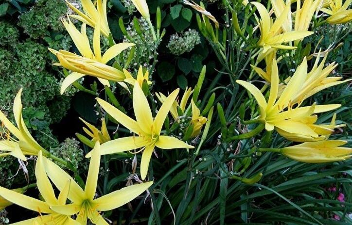

黄花菜
黄花菜（学名：Hemerocallis citrina Baroni）是百合科、萱草属植物。植株一般较高大；根近肉质，中下部常有纺锤状膨大。叶7-20枚，长50-130厘米，宽6-25毫米。花葶长短不一，一般稍长于叶；苞片披针形，花梗较短，通常长不到1厘米；花多朵，最多可达100朵以上；花被淡黄色，有时在花蕾时顶端带黑紫色；花被管长3-5厘米。蒴果钝三棱状椭圆形，长3-5厘米。种子约20多个，黑色，有棱。花果期5-9月。
黄花菜是重要的经济作物。它的花经过蒸、晒，加工成干菜，即金针菜或黄花菜，远销国内外，是很受欢迎的食品，还有健胃、利尿、消肿等功效；根可以酿酒；叶可以造纸和编织草垫；花葶干后可以做纸煤和燃
料。

植株一般较高大；根近肉质，中下部常有纺锤状膨大。叶7-20枚，长50-130厘米，宽6-25毫米。花葶长短不一，一般稍长于叶，基部三棱形，上部多少圆柱形，有分枝；苞片披针形，下面的长可达3-10厘米，自下向上渐短，宽3-6毫米；花梗较短，通常长不到1厘米；花多朵，最多可达100朵以上；花被淡黄色，有时在花蕾时顶端带黑紫色；花被管长3-5厘米，花被裂片长（6-）7-12厘米，内三片宽2-3厘米。蒴果钝三棱状椭圆形，长3-5厘米。种子约20多个，黑色，有棱。
本站文章均来自互联网，仅供学习参考，如有侵犯您的版权，请邮箱联系我们删除！
 上一篇
上一篇